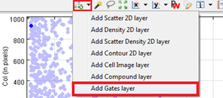
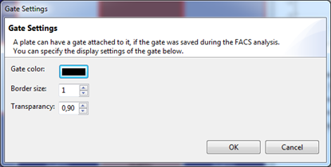

If gates are available for a plate (e.g. plates in FCM-related protocols), they can be displayed in 2D Scatter Charts and the Density charts.
Note: Gates must be saved in the HDF5 data file and they are only shown when the plotted features are an exact match for the gate features.
To show gates in these charts, click on the "add layer" button and select Add Gate Layer. A configuration dialog will open:


| Gate color | The 'Gate color' is the color in which the gate will be shown. |
| Border size | This is the border thickness of the gate. |
| Transparency | This is the opacity of the area within a gate. (1 hidden while 0,0 means completely visible) |